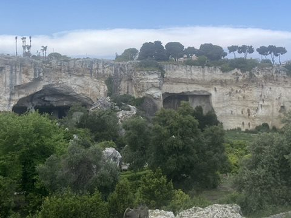
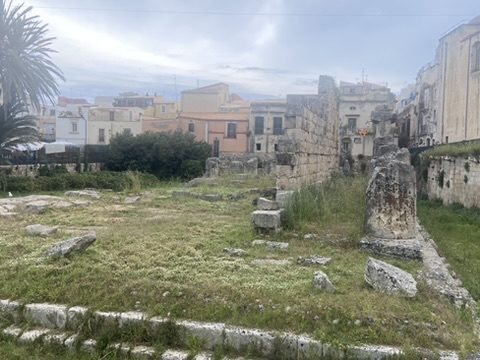
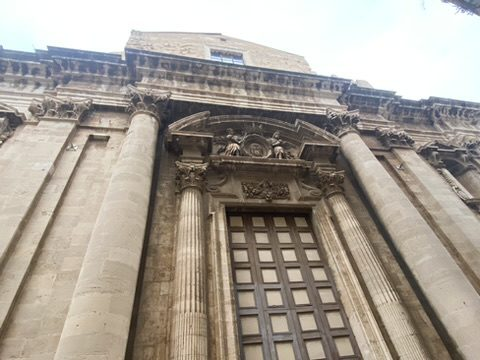
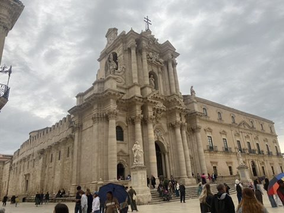
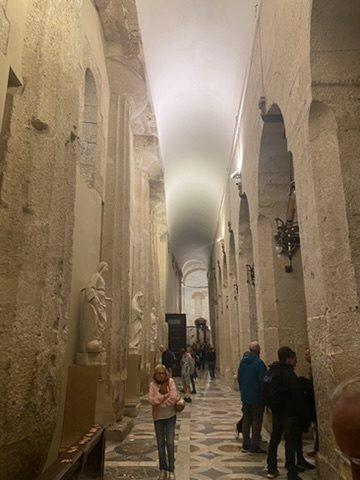
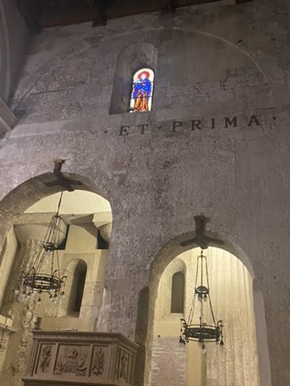
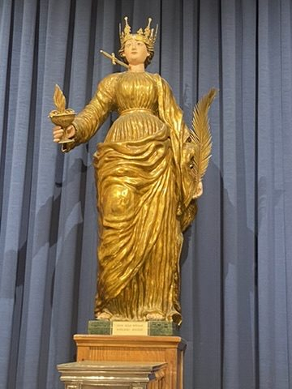
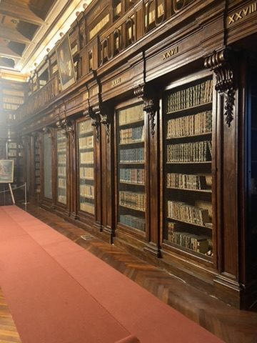

Syrakus: Um 734 v. Chr. von Griechen aus Korinth gegründet, war Syrakus einst eine der mächtigsten Städte der antiken Welt, Heimat des Archimedes. Im Parco archeologico della Neapolis liegen das griechische Theater und die Latomia del Paradiso, ein gewaltiger alter Steinbruch.


Ortigia und der Dom: Die Altstadtinsel Ortigia ist über zwei Brücken mit dem Festland verbunden. Der Dom ist ein Palimpsest: hinter der Barockfassade von 1728 stecken die dorischen Säulen des Athenatempels aus dem 5. Jahrhundert v. Chr. – innen sieht man sie noch in den Wänden. Seit 2005 UNESCO-Welterbe.





